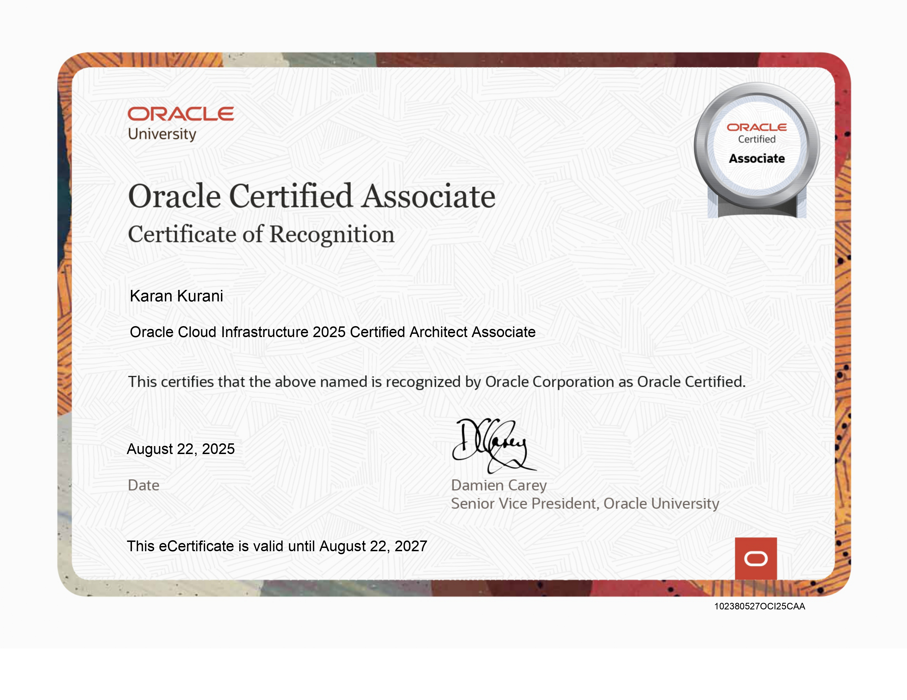
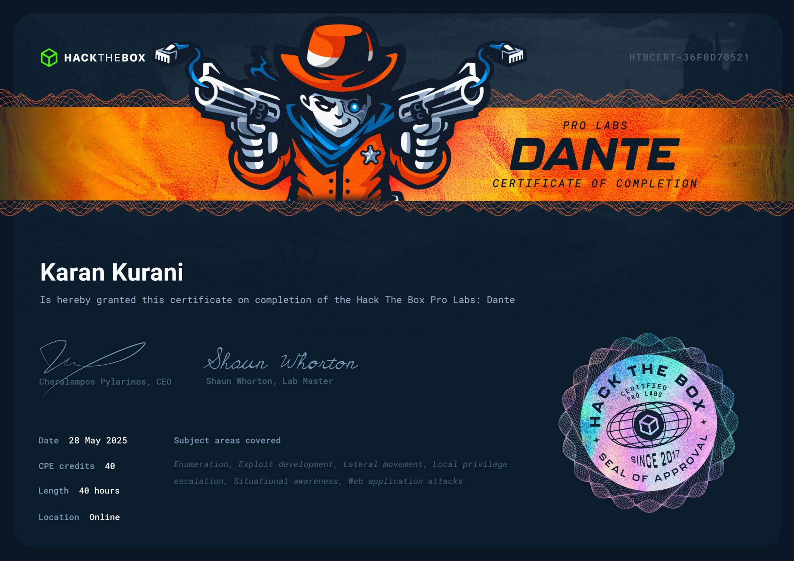
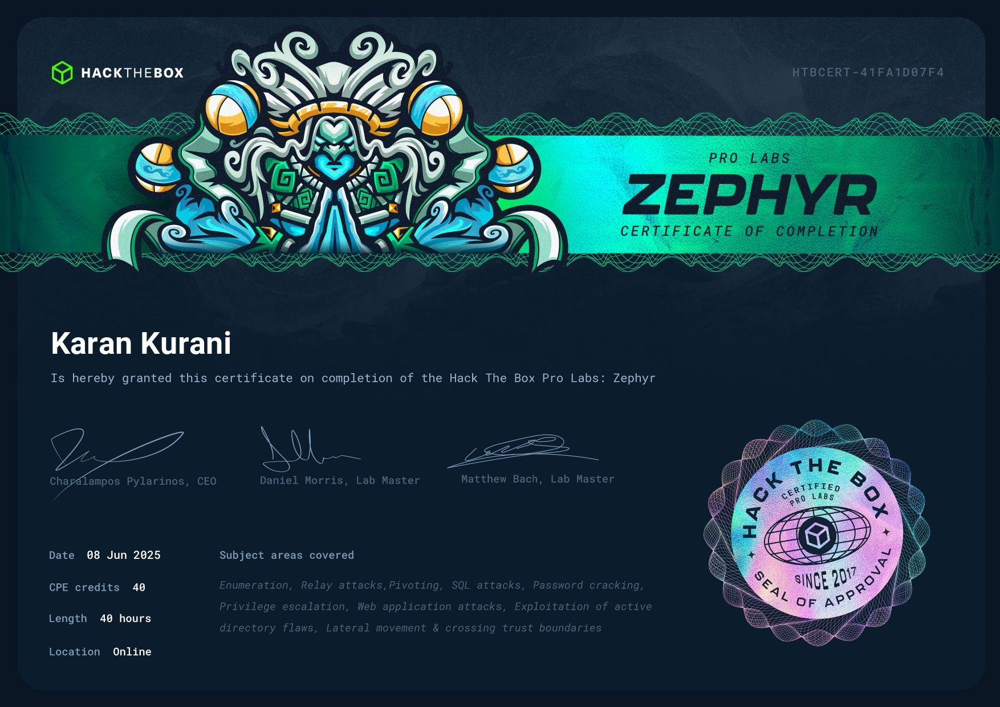
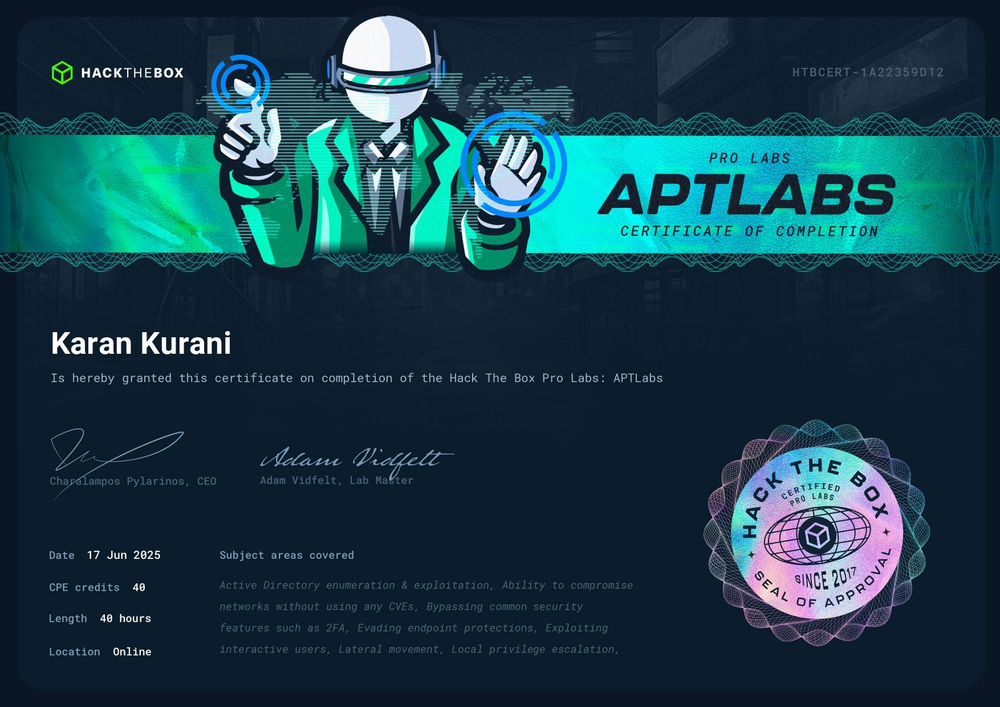
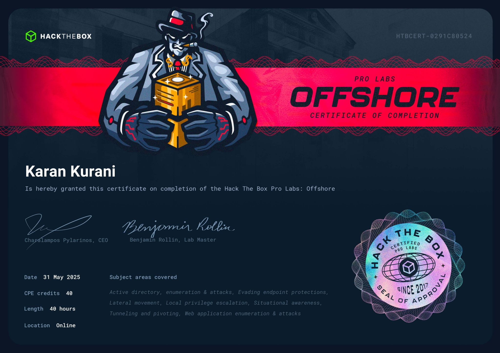
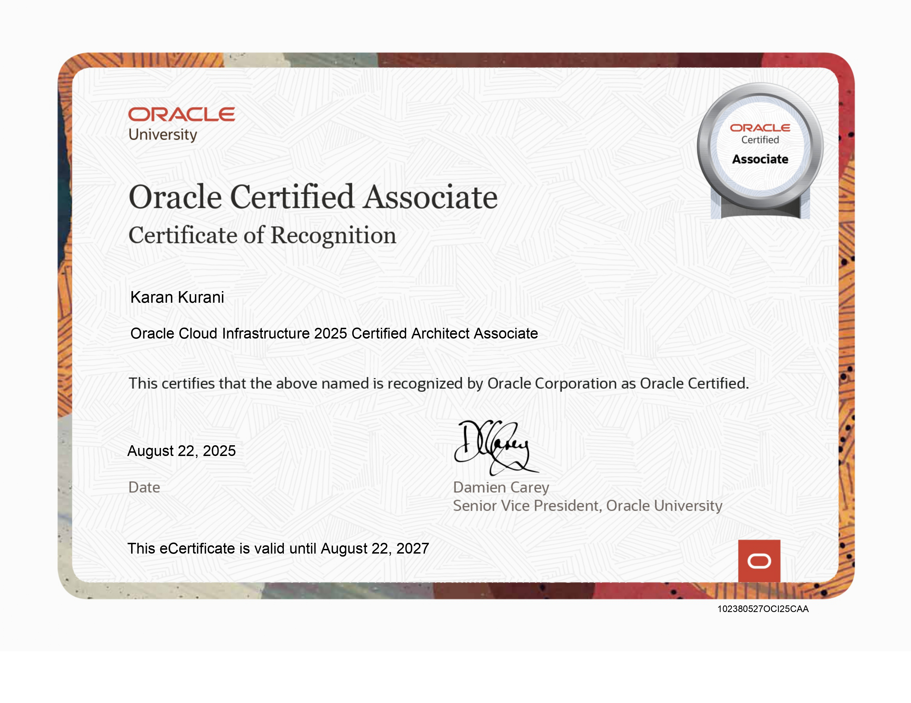
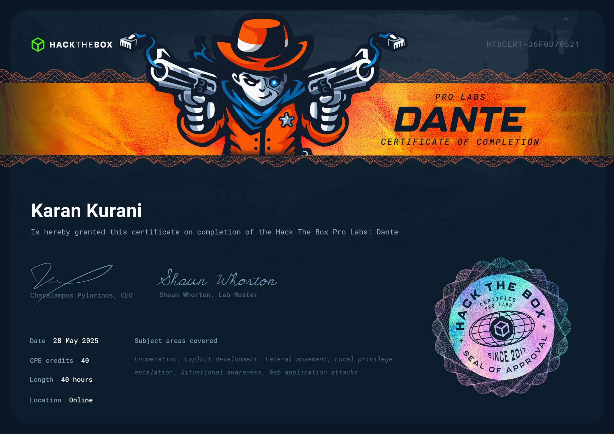
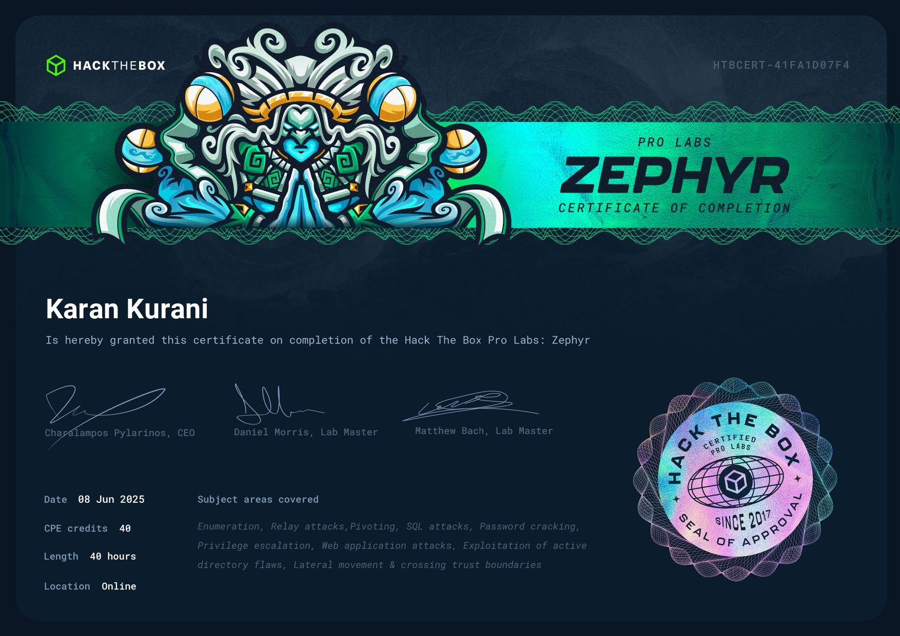
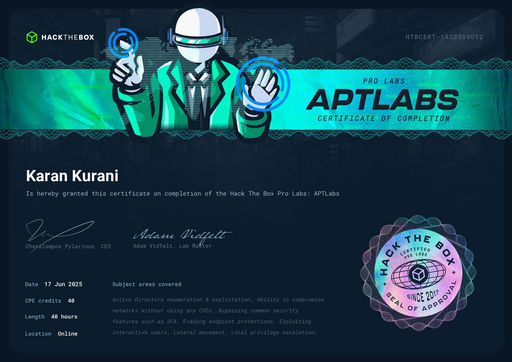
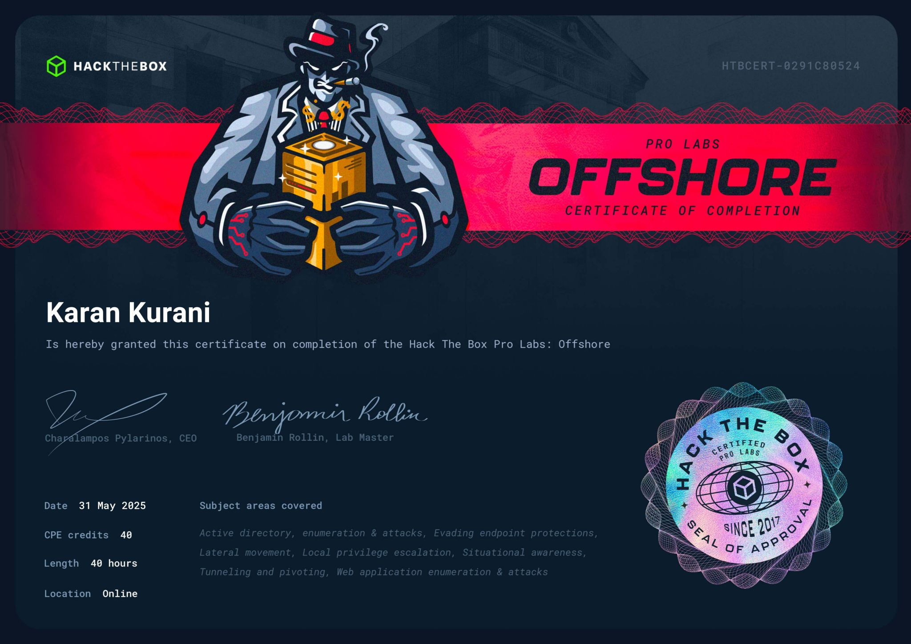

Security Research & Disclosure
Active Researcher conducting structured security assessments across enterprise and public-sector environments.
Selected Disclosures
Remote Code Execution (RCE)
• CVE-2025-55182 - React Server Component RCE...
Access Control & Authorization Flaws
• Public Sharing Disabled Bypass - Metabase
• OAuth 2.0 ROPC Misconfiguration - Infosys
Information Disclosure
• Microsoft OneDrive XS-Search Timing Side-Channel
• PKCE Logging Exposure - Pretix
• Cloud-hosted passive data exposure on AWS
Configuration & Logging Weaknesses
• REQUEST_ID_HEADER parsing flaw - Pretix
• Log injection vector via configuration handling - Pretix

 








